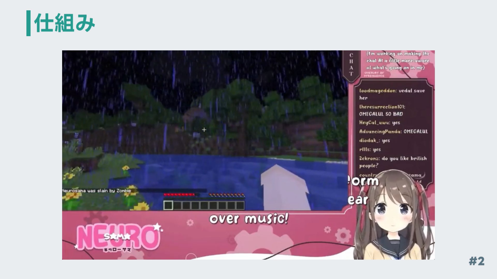
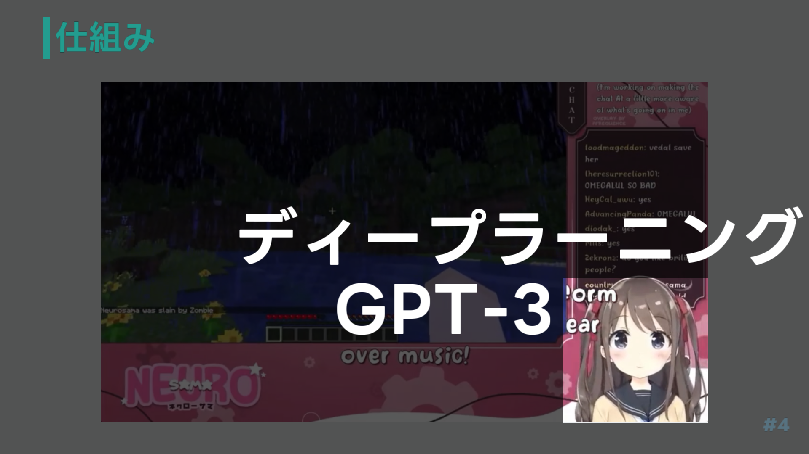

学習成果発表会
AIは人間を超えることができるのか
2年2組 合木洋睦
概要
AIの発達が著しい現代。AIはどこまでできるのか。人間を超えることができるのかを少し面白い視点から解説。
目次
タイトル
AIとは
AIの活用例とその仕組み
機械学習
ディープラーニング
GPT-3 -強すぎるAI-
GPT-3 -脆弱性/欠点/問題点-
AIの未来
まとめ
出典・引用元
発表原稿
タイトル
今からAIは人間を超えることができるのかの発表を始めます。
AIとは

AI(Artificial Intelligence)とは日本語で人工知能のことです。
AIには弱いAIと呼ばれる特化型AIというものと、強いAIと呼ばれる汎用型AIがあります。
 突然ですが質問です。皆さんはAIといえば何を想像しますか？
突然ですが質問です。皆さんはAIといえば何を想像しますか？
映画や創作物のようなAIを想像する人やSiriなどのものを想像する人がいると思います。
AIの具体例を紹介します。
先程あげたSiriやGoogleアシスタントなどの音声AIアシスタントや
AmazonGoなどの自動会計システム、AmazonやYouTubeのおすすめ(レコメンド)機能
自動運転システム(画像はTesla AutoPilot)
Google Lensの画像認識などがあります。
先程あげたAIの例はすべて特化型AIです。
汎用型AIは現在存在しません。なので特化型AIが人間を超えることができるのかを調べていきました。
AIの活用例とその仕組み
 AIの活用例とその仕組みを紹介します。
AIの活用例とその仕組みを紹介します。
まずはこの動画を見てください
例の動画を挿入・再生
(音量が小さくなったら言い出す)
こちらの動画は海外の開発者が作ったすべてAIのバーチャルYouTuberです。
プレイはもちろん喋りも全てAIでできています。このAIをもとにAIが人間を超えることができるのかを調べてみました。

このAI2種類のAIからできています。
 1つ目はプレイを担当している機械学習
1つ目はプレイを担当している機械学習

2つ目は喋り(コメント返信)を担当しているディープラーニングです。これはGPT-3というものを活用しています。
機械学習
プレイを担当している機械学習について説明します。
機械学習とはシングルタスクを得意とするAIです。
ゲームでスコアがあるように機械学習にもスコアを与えます。 良い結果ならプラスのスコア悪い結果ならマイナスのスコアを与え、AIが何度も挑戦し、スコアを求めて進化します。
人が定義する必要があるため人間より優れることはないと考察することができます。
ディープラーニング
喋り(コメント返信)を担当しているディープラーニングについて説明します。
 ディープラーニングは先ほど紹介した機械学習の一種です。
人間の脳みその構造を再現したもので、AIが特徴を自動的に定義する事ができます。
ディープラーニングは先ほど紹介した機械学習の一種です。
人間の脳みその構造を再現したもので、AIが特徴を自動的に定義する事ができます。
機械学習にはできない"自分で成長する"ということができます。
今回の例で上げたVtuberはGPT-3というディープラーニングで作られたAIを使用しています。
GPT-3 -強すぎるAI-
GPT-3(Generative Pre-trained Transformer 3)
強すぎるAIとして現在話題沸騰中のGPT-3はOpenAIというイーロン・マスク氏筆頭に立ち上げられた非営利団体が開発・公開しています。
そんなGPT-3は文章生成AIという種類になります。
GPTのここがすごい！
OpenAIのアカウントがあれば誰でも利用可能！
100万ユーザーを5日で達成
みなさんが知っている大物サービスよりも大幅に短い時間で多くのユーザー数を獲得しています。
チャットをするような感覚で使える。
画面はとても見やすくシンプルで使いやすいデザイン。
できないことがないぐらいに賢い
GPT-3はとても多くのことができます。
会話はもちろん。作詞作曲。翻訳や要約プログラミングなどができます。
ではなぜ文章生成AIであるGPT-3がここまで賢いのか
GPT-3は45TBもの莫大なデータを学習しています。しかも現在も学習データは増え続けているというのです。
そして音楽系のサイトやプログラミングや論文などを学習しているため様々なことを行うことができます。
GPT-3 -脆弱性/欠点/問題点-
GPT-3の脆弱性,欠点,問題点を紹介します
コストがかかる。GPT-3を1日維持するのに100万USD。日本円で約130億円かかるそうです。
 GPT-3は文章を作るだけのAIのため、データの信憑性にかけます。基本的にGPT-3が言っていることは間違っていると考える方が良いでしょう。
GPT-3は文章を作るだけのAIのため、データの信憑性にかけます。基本的にGPT-3が言っていることは間違っていると考える方が良いでしょう。
試しに最新のiPhoneはなに？と聞くとデータが古いため、2020年のデータが返ってきました。
文章を確率的に生成しているため、言葉を選ぶことができません。
なので配信中に不適切な発言をし、このチャンネルはアカウント凍結しました。
AIの未来
AIが人間を超えれない根本的な理由が存在します。
それは、人工物なので自然な知能や感覚を持っていない。感情を理解、再現ができない。倫理的な判断ができなかったり、倫理的な質問に答えられない。などがあります。
まとめ
まとめ
賢いAIは存在しているが欠点が存在する。現時点での特化型AIは人間を超えることは不可能。
出典・引用元
出典・引用元は次のとおりです。
以上で発表を終わります。
ダウンロード
出典・引用元
AIとは
・AIの例
Siri ©Apple Inc. url:./link/siri
Google Assistant ©Google LLC url:./link/googleassistant
DeepL ©DeepL GmbH url:./link/DeepL
AmazonGo ©Amazon.com, Inc. url:./link/AmazonGo
Amazon ©Amazon.com, Inc. url:./link/Amazon
YouTube ©Google LLC url:./link/YouTube
GoogleLens ©Google LLC url:./link/GoogleLes
AIの活用例とその仕組み
・仕組み
Neuro-sama ©Vedal987 url:./link/Neuro-sama
GPT-3 -強すぎるAI-
GPT-3のここがすごい！
100万人達成主要サービス ©起業ログ url:./link/gpt-1m
Playground ©OpenAI Inc. url:./link/gpt-3
AIの未来
・AIの成長と人間の成長
How AI Can Improve Human Decision-making ©MIT IDE url:./link/mit
リンクは短縮URLを使用しています。
変更履歴
2月5日
タイトルに名前を記入しました。
タイトル
2月6日
様々なページで文章内容を変更
重複するコンテンツ
GPT-3 -強すぎるAI-
注釈追加
ディープラーニング
重複するコンテンツ
GPT-3 -脆弱性/欠点/問題点-
必要なし判断
GPT-3 -脆弱性/欠点/問題点-
必要なし判断
AIの未来
必要なし判断
AIの未来
内容変更による変更
まとめ
このページについて
コピー及び選択、保存、印刷が禁止されています。
©hiromu